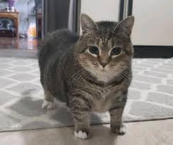

Gato Uiia

Ficha Técnica:
Nome: Gato Uiia
Nomes alternativos: Gato Giratório, Gato OIIA
Raça: Gato
Tipo da raça: Espacial
Nivel de ameaça: Alto
Características físicas:
- Gato de pelagem curta
- Olhos que parecem olhar em direções opostas simultaneamente
- Se locomove girando e flutuando
- Emite um som de "oiia oiiiaa" enquanto se locomove
- Patas desproporcionalmente curtas em relação ao corpo
Capacidades:
- Rotação corporal em velocidades impossíveis para qualquer ser vivo
- Criação de um campo de distorção espacial ao seu redor
- Todas as nossas tentativas de medição da distorção espacial falharam
- A única certeza é que ele é um perigo caso saia do controle
- Pode atingir 10% da velocidade da luz
- Velocidade de voo aumenta de acordo com a velocidade de rotação
Fraquezas:
- Mesmo com alta aceleração, ele ainda depende de dois minutos para velocidade total QUEM FOI O IDIOTA QUE COLOCOU ISSO AQUI? NÓS NEM SABEMOS QUAL A VELOCIDADE TOTAL
- Completamente vulnerável a rituais, bruxaria e afins
- Colocar dois Gatos Uiia em rota de colisão pode resultar em um choque que derrubará ambos
Como contê-la:
Se você a encontrar girando, corra imediatamante. Apenas com a utilização de tecnologias específicas e equipamentos de segurança, você pode tentar capturar o Gato Uiia. Apenas a Base 3 e a Base do Lugar Nenhum são capazes de o manter contido.
Relato do Agente Dimitri:
Agente Dimitri foi enviado para investigar relatos de pessoas "paralisadas" em um beco de São Paulo. Ele é um dos poucos que conseguiu resistir ao transe.
"Quando cheguei, havia sete pessoas de pé, olhando fixamente para o chão. Todas com um sorriso no rosto. Quando olhei na direção delas, vi uma gata girando. Parecia impossível - a velocidade era absurda, como um pião. Comecei a ouvir uma música estranha na minha cabeça. 'Oiia, oiia, oiia.' Senti minhas pernas travarem. Por sorte, meu rádio deu um chiado agudo e ela parou. As pessoas acordaram do transe sem memória alguma do que aconteceu. Algumas estavam ali há mais de 12 horas."
Variações:
Não há registro de outros gatos giratórios, porém vídeos na internet sugerem que o efeito hipnótico pode ser parcialmente transmitido através de gravações digitais.
História:
A história do Gato Uiia ainda está sendo documentada.